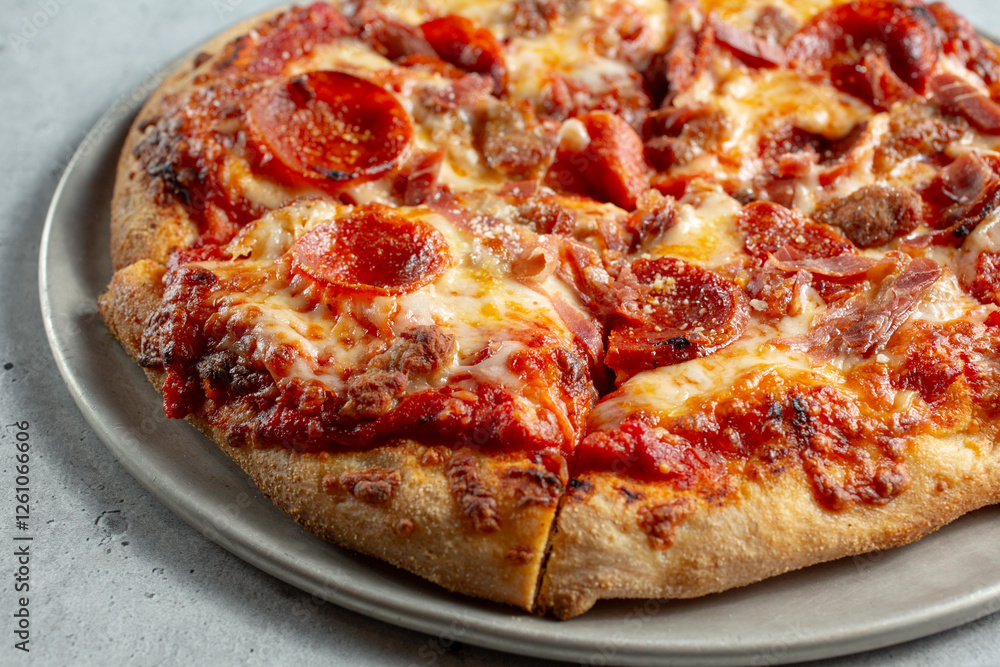

Home
Personal Pan Pizza

A perfectly cooked homemade personal pan pizza
Ingredients:
- 1 cup all-purpose flour
- 1/2 tsp active dry yeast
- 1/4 tsp salt
- 1/3 cup warm water
- 2 tbsp olive oil
- 1/4 cup pizza sauce
- 1/2 cup shredded mozzarella cheese
- Your favorite toppings (pepperoni, mushrooms, bell peppers, etc.)
Steps:
- In a bowl, combine warm water and yeast. Let it sit for about 5 minutes until frothy.
- Add flour, salt, and olive oil to the yeast mixture. Mix until a dough forms.
- Knead the dough on a floured surface for about 5 minutes until smooth and elastic.
- Place the dough in a greased bowl, cover with a cloth, and let it rise for about 1 hour until doubled in size.
- Preheat your oven to 450°F (230°C).
- Punch down the dough and roll it out into a circle that fits your personal pan or baking sheet.
- Transfer the dough to the pan. Spread pizza sauce over the dough, leaving a small border around the edges.
- Sprinkle shredded mozzarella cheese over the sauce and add your favorite toppings.
- Bake in the preheated oven for about 12-15 minutes until the crust is golden and the cheese is bubbly.
- Remove from oven, let cool for a few minutes, slice, and enjoy your homemade personal pan pizza!